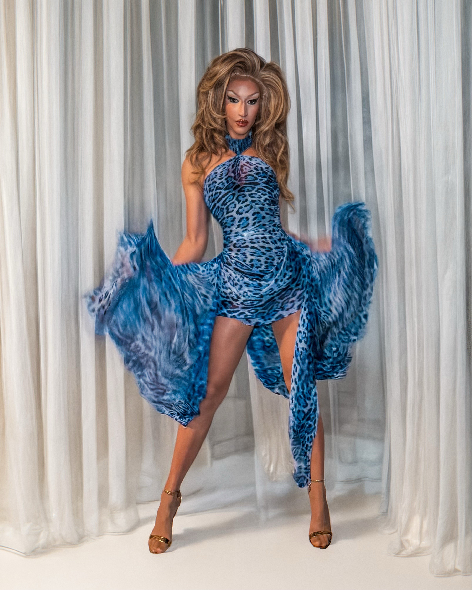

Ich bin Karlie Kant, Dragqueen aus Berlin, established 2017 – immer gut gekleidet, immer gut gelaunt!
Saarbrücken – mein queerer Heimathafen (und ich bin die AIDA). Mit Provokant wollte ich etwas von der Energie, die ich durch Drag gefunden habe, in meine Heimat zurücktragen. Unsere Sommer- und Winter-Show im Jules Verne ist heiß begehrt – und hat einen kleinen queeren Kulturboom in der Stadt ausgelöst: etwa mit Drag Habibi, dem Show Format meiner Drag-Tochter Twiga.
Ob Märchenwald, Toxic Masculinity, Saints & Sinners oder True Crime – kein Thema ist zu groß für diesen Drag-Fiebertraum. Zusammen mit Yvonne Nightstand habe ich schon Brunch-Editionen, Dinnerevents und sogar eine Show in einer echten Kirche umgesetzt. Wir sind mit dem Format mittlerweile auch über Berlins Grenzen hinaus unterwegs.
Private Veranstaltungen
Geburtstag? Hochzeit? Schiffstaufe? Mit Hammer-Looks, fantastischen Nummern und natürlich Humor sorge ich für Applaus und Abriss – denn jede Party ist besser mit einer Drag Queen.
Corporate Events
Firmenfeier, Podiumsdiskussion, Produktlaunch oder Team-Event? Ich bringe Ihre Gäste zum Lachen, Staunen und Denken – ob als charmante Moderatorin, Icebreaker oder Showeinlage. Workshops oder kreative Warm-ups? Ich verspreche: Nie wieder peinliche Kennenlernrunden.
Ich moderiere regelmäßig das Rahmenprogramm des CSD Saarbrücken im Auftrag des LSVD Saar. Neben meinem “Dayjob” als Projektleiterin in einem internationalen Medienunternehmen engagiere ich mich dort in der LGBTIQA+ AG – und kämpfe für Sichtbarkeit und Gleichstellung, intern wie extern. Seit meiner Anti-Bias-Ausbildung 2020 arbeite ich zudem mit der Agentur IN-VISIBLE zusammen und gebe Workshops rund um Diversity und diskriminierungssensibles Arbeiten.
Keine Technik? Kein Problem. Ich kann mein eigenes Setup mitbringen – für bis zu 100 Personen:
Sie müssen sich um nichts kümmern – außer um Ihre Gäste.
Sie haben Fragen? Möchten mich buchen? Oder ein Paar getragene Socken kaufen?
Ich bin offen für Vorschläge! → Instagram: @karliekant